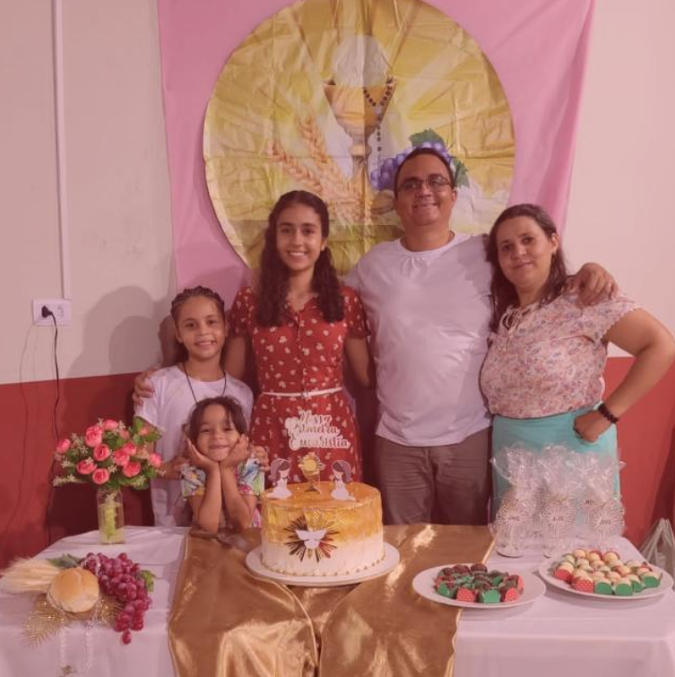

Fundamentos da Fé Católica
| DATA | TEMA | MINISTRANTE |
|---|---|---|
| 17/02/2025 |
1
Introdução ao Catecismo da Igreja Católica
Parágrafos 1 a 25 |

Eliomar / Valdênia
Ministrantes
|
| 03/03/2025 |
2
A Revelação de Deus
Parágrafos 50 a 141 |
Kassiano Caetano
Ministrante
|
| 17/03/2025 |
3
A Trindade
Parágrafos 232 a 267 |
Padre Feliciano Dias
Sacerdote
|
| 31/03/2025 |
4
A Criação e a Providência Divina
Parágrafos 279 a 354 |
Elaine Germina
Ministrante
|
| 21/04/2025 |
5
O Pecado Original e suas Consequências
Parágrafos 385 a 421 |
Flávio
Ministrante
|
| 05/05/2025 |
6
A Missão de Jesus Cristo
Parágrafos 422 a 682 |
Marcos Paulo Luz
Ministrante
|
Os Sacramentos e a Vida Cristã
| DATA | TEMA | MINISTRANTE |
|---|---|---|
| 19/05/2025 |
7
Introdução aos Sacramentos
Parágrafos 1066 a 1209 |
Leonardo Caetano
Ministrante
|
| 02/06/2025 |
8
O Batismo
Parágrafos 1210 a 1284 |
Padre Ferdiran
Sacerdote
|
| 16/06/2025 |
9
A Eucaristia
Parágrafos 1322 a 1419 |
Cláudio
Ministrante
|
| 30/06/2025 |
10
A Confirmação
Parágrafos 1285 a 1321 |
Padre Fernando
Sacerdote
|
| 14/07/2025 |
11
Matrimônio e Ordem
Parágrafos 1536 a 1666 |
Daniel Jorge / Maria Sátira
Ministrantes
|
| 28/07/2025 |
12
Unção dos Enfermos e Penitência
Parágrafos 1420 a 1532 |
Analeny e Marcos
Ministrantes
|
A Moral Cristã e os Mandamentos
| DATA | TEMA | MINISTRANTE |
|---|---|---|
| 11/08/2025 |
13
A Vida Cristã
Parágrafos 1691 a 1742 |
Padre Alef
Sacerdote
|
| 25/08/2025 |
14
O Amor a Deus e ao Próximo
Parágrafos 1822 a 1829 |
A definir
Ministrante
|
| 08/09/2025 |
15
Os Dez Mandamentos
Parágrafos 2052 a 2557 |
Jonas e Ediliane
Ministrantes
|
| 22/09/2025 |
16
As Bem-Aventuranças
Parágrafos 1716 a 1729 |
Edinalda e Tiago
Ministrantes
|
| 06/10/2025 |
17
A Moral Cristã e a Liberdade
Parágrafos 1730 a 1748 |
Marcos Paulo
Ministrante
|
| 20/10/2025 |
18
Virtudes e Pecados Capitais
Parágrafos 1830 a 1845 |
Rirone
Ministrante
|
A Igreja e a Esperança Cristã
| DATA | TEMA | MINISTRANTE |
|---|---|---|
| 03/11/2025 |
19
A Igreja como Corpo de Cristo
Parágrafos 748 a 810 |
Padre Ismael
Ministrante
|
| 17/11/2025 |
20
A Hierarquia e os Ministérios na Igreja
Parágrafos 871 a 945 |
A definir
Ministrante
|
| 01/12/2025 |
21
Os Santos e a Vida de Santidade
Parágrafos 946 a 962 e 2012 a 2029 |
Glória
Ministrante
|
| 15/12/2025 |
22
A Esperança Cristã
Parágrafos 1817 a 1821 |
A definir
Ministrante
|
| 05/01/2026 |
23
O Apocalipse e a Vitória de Cristo
Parágrafos 668 a 682 e 1038 a 1060 |
A definir
Ministrante
|
| 19/01/2026 |
24
Celebração e Conclusão do Curso
|
A definir
Ministrante
|